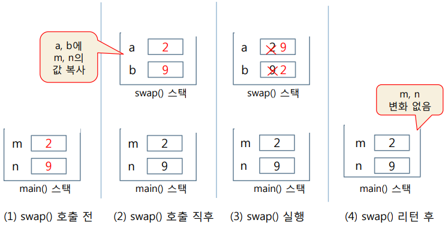
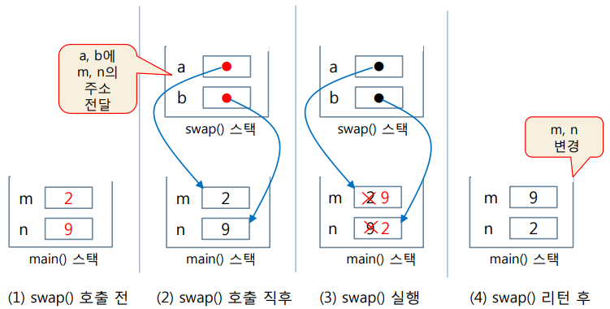
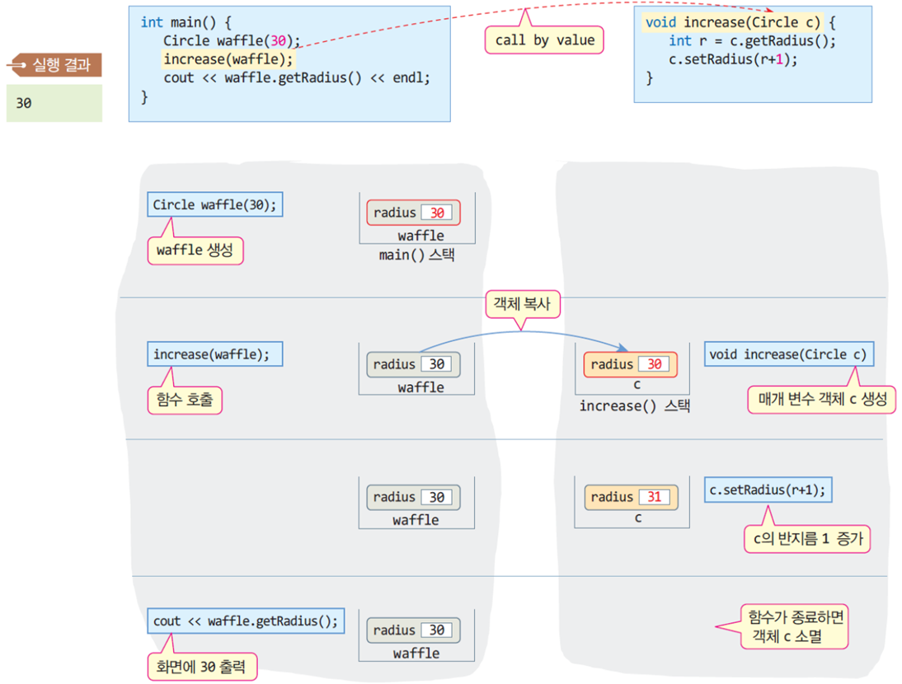
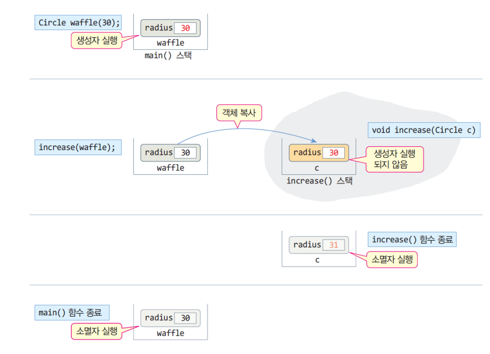
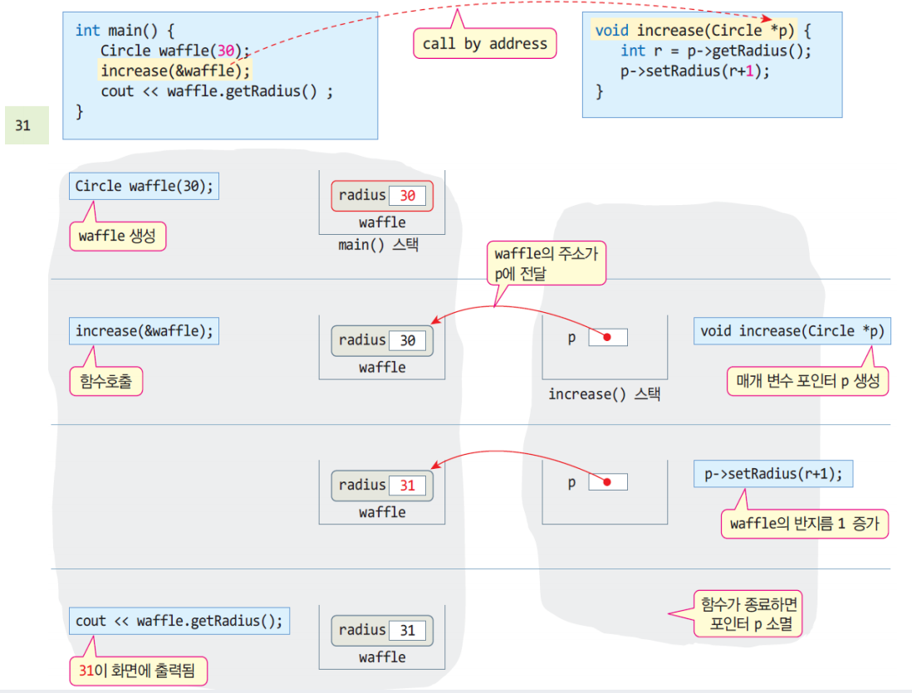
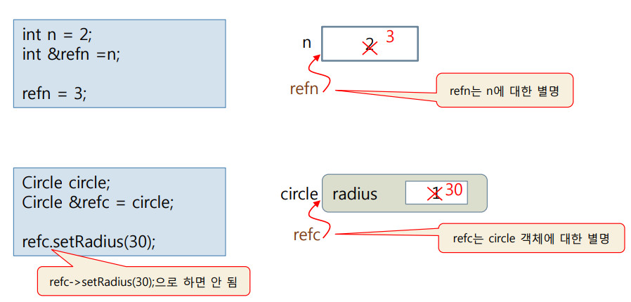
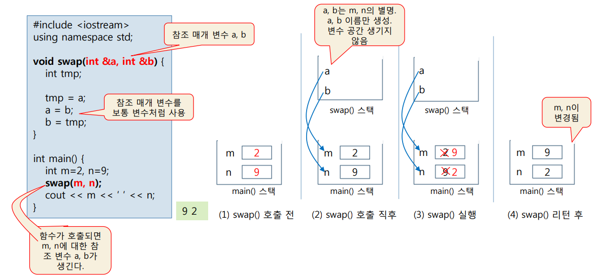
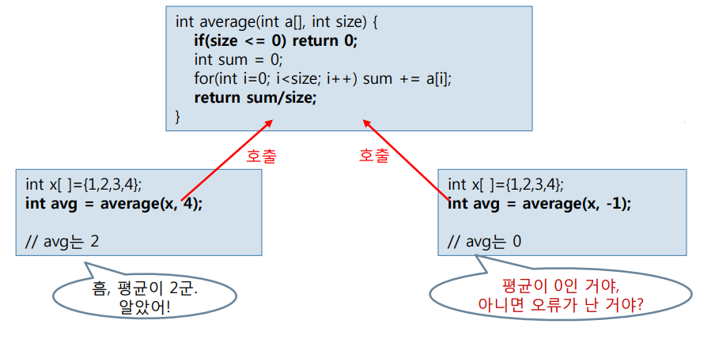
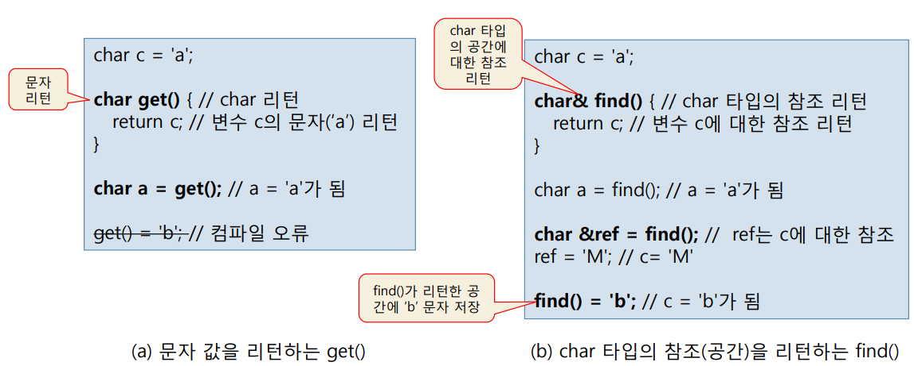
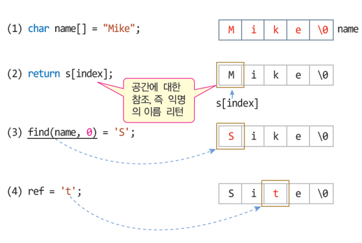

Chapter 5. 함수와 참조¶
'명품 C++Programming - 황기태' 5장 학습 내용
0절. 함수¶
함수의 인자 전달 방식 리뷰¶
- 인자 전달 방식
- 값에 의한 호출 : call by value
- 함수가 호출되면 매개 변수가 스택에 생성
- 호출하는 코드에서 값을 넘겨줌
- 호출하는 코드에서 넘어온 값이 매개 변수에 복사
- 주소에 의한 호출 : call by address
- 함수의 매개 변수는 포인터 타입
- 함수가 호출되면 포인터 타입의 매개 변수가 스택에 생성
- 호출하는 코드에서는 명시적으로 주소를 넘겨줌
- 기본 타입 변수나 객체의 경우, 주소 전달
- 배열의 경우, 배열의 이름
- 호출하는 코드에서 넘어온 주소값이 매개 변수에 저장
1절. 호출¶
값에 의한 호출과 주소에 의한 호출¶
코드로 비교¶
- 값에 의한 호출

void swap(int a, int b){
int tmp;
tmp = a;
a = b;
b = tmp;
}
int main(){
int m = 2;
int n = 9;
swap(m, n);
cout << m << ' ' << n;
}
// 출력 예시
// 2 9
- 주소에 의한 호출

void swap(int *a, int *b){
int tmp;
tmp = *a;
*a = *b;
*b = tmp;
}
int main(){
int m = 2;
int n = 9;
swap(&m, &n);
cout << m << ' ' << n;
}
// 출력 예시
// 9 2
2절. 값에 의한 호출¶
'값에 의한 호출'로 객체 전달¶
- 함수를 호출하는 쪽에서 객체 전달
- 객체 이름만 사용
- 함수의 매개 변수 객체 생성
- 매개 변수 객체의 공간이 스택에 할당
- 호출하는 쪽의 객체가 매개 변수 객체에 그대로 복사
- 매개 변수 객체의 생성자는 호출 X
- 함수 종료
- 매개 변수 객체의 소멸자 호출 > 매개 변수 객체의 생성자 소멸자의 비대칭 실행 구조를 가짐
- 값에 의한 호출 시 매개 변수 객체의 생성자가 실행되지 않는 이유
- 호출되는 순간 실인자 객체 상태를 매개 변수 객체에 그대로 전달하기 때문
'값에 의한 호출' 방식으로 함수가 호출되는 과정(increase(Circle c))¶

- 예제 1. 값에 의한 호출에서 매개 변수의 생성자가 실행되지 않는 예제 예제
SourceCodeChecking
값에 의한 호출에서 생성자와 소멸자의 비대칭 실행¶

3절. 주소에 의한 호출¶
함수에 객체 전달 : 주소에 의한 호출¶
- 함수 호출 시 객체의 주소만 전달
- 함수의 매개 변수는 객체에 대한 포인터 변수로 선언
- 함수 호출 시 생성자 소멸자가 실행되지 않는 구조
'주소에 의한 호출' 방식으로 함수가 호출되는 과정(increase(Circle c))¶

4절. 객체¶
객체 치환 및 객체 리턴¶
- 객체 치환
- 동일한 클래스 타입의 객체끼리 치환 가능
- 객체의 모든 데이터가 비트 단위로 복사
- 치환된 두 객체는 현재 내용물만 같고 독립적인 공간을 유지
- 객체 리턴
Circle getCircle() {
Circle tmp(30);
return tmp;
// 객체 tmp 리턴
}
Circle c;
// 현재 c는 기본 생성자를 사용하며 반지름이 1인 상태
c = getCircle();
// tmp 객체의 복사본이 c1에 치환
// 따라서 c의 반지름은 30이 됨
- 예제 2. 객체 리턴 예제
SourceCodeChecking
5절. 참조¶
참조란?¶
- 참조(reference)
- 가리킨다는 뜻
- 이미 존재하는 객체나 변수에 대한 별명
- 참조 활용
- 참조 변수
- 참조에 의한 호출
- 참조 리턴
참조 변수¶
- 참조 변수 선언
- 참조자 '&' 도입
- 이미 존재하는 변수에 대한 다른 이름(별명)을 선언
- 참조 변수는 이름만 생성
- 참조 변수에 새로운 공간은 할당되지 않음
- 초기화로 지정된 기존 변수 공유
int n = 2;
int &refn = n;
// 참조 변수 refn 선언
// refn은 n에 대한 별명
Circle circle;
Circle &refc = circle;
// 참조 변수 refc 선언
// refn은 circle에 대한 별명
참조 변수 선언 및 사용 사례¶

-
예제 3. 기본 타입 변수에 대한 참조 예제
SourceCodeChecking -
예제 4. 객체에 대한 참조 예제
SourceCodeChecking
참조에 의한 호출¶
- 참조를 가장 많이 활용하는 사례
- call by reference라고 부름
- 함수 형식
- 함수의 매개 변수를 참조 타입으로 선언
- 참조 매개 변수(reference parameter)라고 부름
- 참조 매개 변수는 실인자 변수를 참조
- 참조 매개 변수의 이름만 생기고 공간이 생기지 않음
- 참조 매개 변수는 실인자 변수 공간 공유
- 참조 매개 변수에 대한 조작은 실인자 변수 조작 효과
참조에 의한 호출 사례¶

참조 매개변수가 필요한 사례¶
- average() 함수의 작동 사례
- 계산에 오류가 있으면 0 리턴
- 계산에 오류가 없으면 평균 리턴
- 만약 average()가 리턴한 값이 0이라면?
- 평균이 0인지 오류가 발생한 것인지 판단 불가

-
예제 5. 참조 매개 변수의 평균 리턴 예제
SourceCodeChecking -
예제 6. Circle 객체에 참조 전달 예제
SourceCodeChecking -
예제 7. 참조 매개 변수를 가진 함수 만들기 예제
SourceCodeChecking
참조 리턴¶
- C언어의 함수 리턴
- 함수는 반드시 값만 리턴
- 기본 타입 값 : int, char, double 등
- 포인터 값
- C++의 함수 리턴
- 함수는 값 외에 참조 리턴 가능
- 참조 리턴
- 변수 등과 같이 현존하는 공간에 대한 참조 리턴
- 변수의 값을 리턴하는 것이 아님
값을 리턴하는 함수 vs 참조를 리턴하는 함수¶

- 예제 8. 간단한 참조 리턴 예제
SourceCodeChecking
